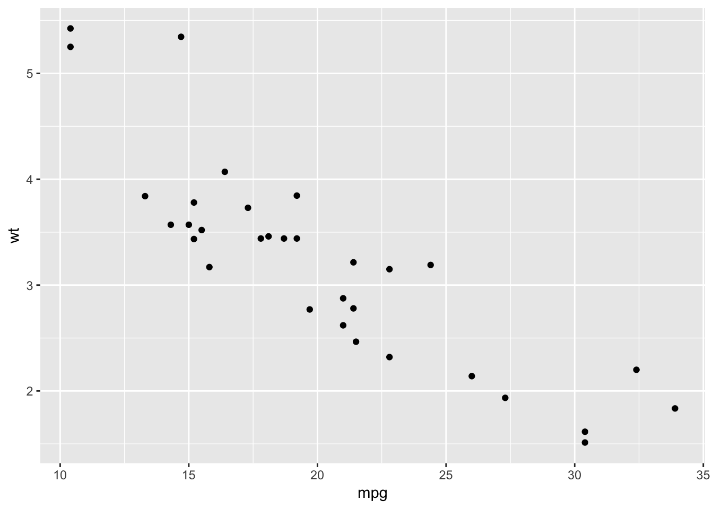
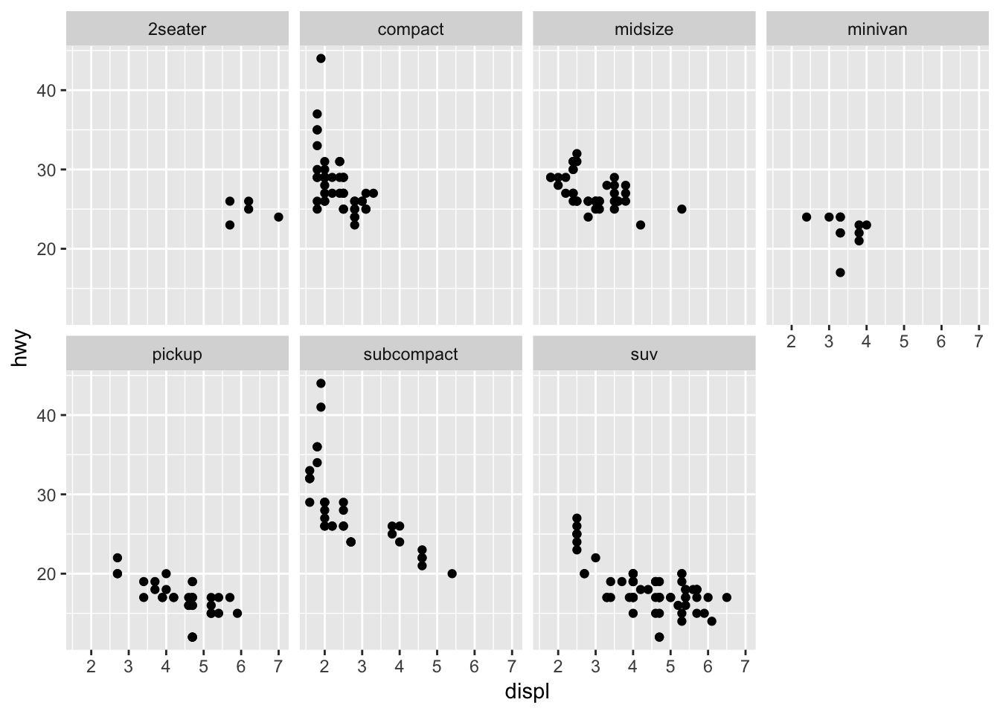
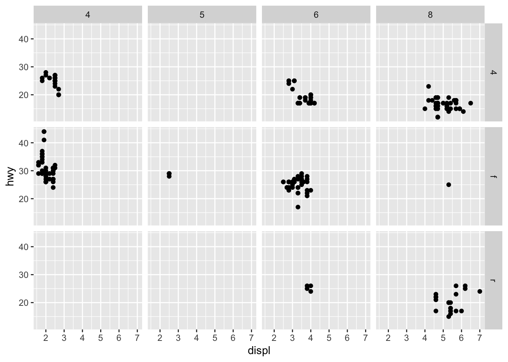
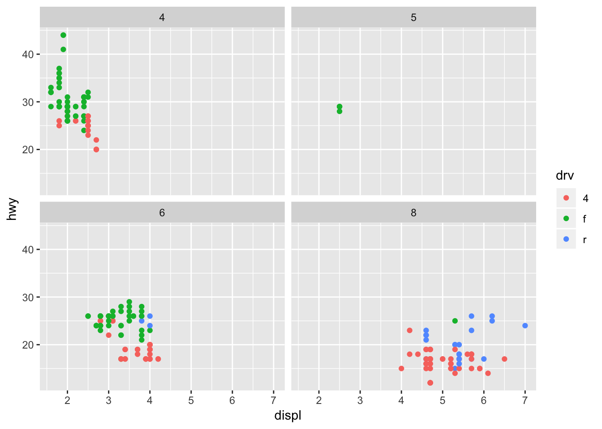
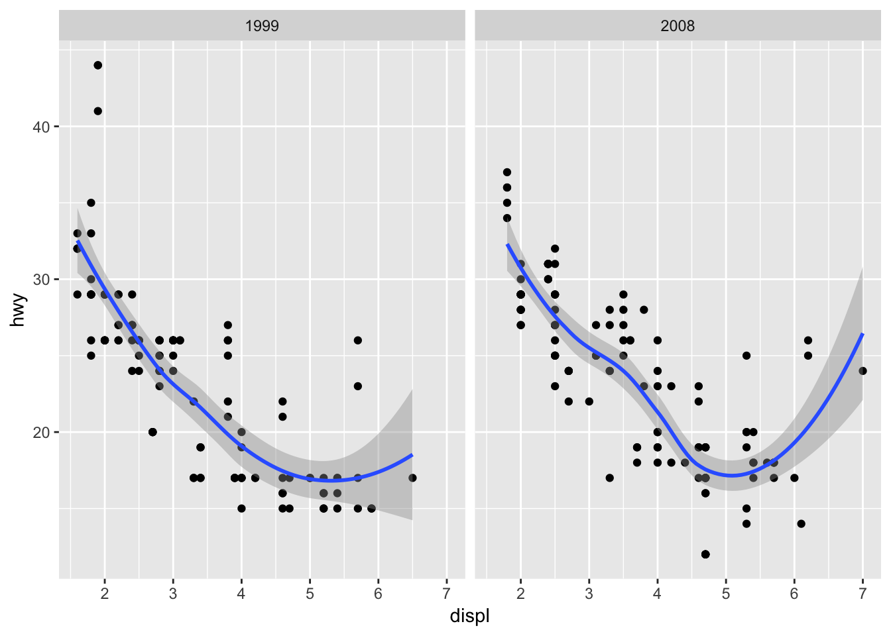

Data viz
basic plots.
lattice.
ggplot2.
you need to see data. see the trends. explore them using visuals.
Contemporary data viz for statistical analyses slide deck
Philosophy of R stats
Clean simple graphics are powerful tools in statistics (and in scientific communication). Tufte and others have shaped data scientists and statisticians in developing more libraries, new standards, and assumptions associated with graphical representations of data. Data viz must highlight the differences, show underlying data structures, and provide insights into the specific research project. R is infinitely customizable in all these respects. There are at least two major current paradigms (there are more these are the two dominant idea sets). Base R plots are simple, relatively flexible, and very easy. However, their grammar, i.e their rules of coding are not modern. Ggplot and related libraries invoke a new, formal grammar of graphics that is more logical, more flexible, but divergent from base R code. It is worth the time to understand the differences and know when to use each.
Evolution of plotting in statistics using R in particular went from base-R then onto lattice then to the ggvis universe with the most recent library being ggplot2. Base-R is certainly useful in some contexts as is the lattice and lattice extra library. However, ggplot2 now encompasses all these capacities with a much simpler set of grammar (i.e. rules and order). Nonetheless, you should be able to read base-R code for plots and be able to do some as well. The philosophy or grammar of modern graphics is well articulated and includes the following key principles.
The grammar of graphics layers primacy of layers (simple first, then more complex) i.e. you build up your plots data are mapped to aesthetic attributes and geometric objects data first then statistics even in plots
Data viz case study #1.
library(ggplot2)
survey<-read.csv("data/5081.survey.1.csv")
str(survey)## 'data.frame': 18 obs. of 4 variables:
## $ r.experience : int 2 1 2 3 1 1 3 1 1 3 ...
## $ discipline : Factor w/ 4 levels "ecology","environmental science",..: 4 3 4 4 1 4 1 1 1 3 ...
## $ research.data: Factor w/ 2 levels "qualitative",..: 2 2 2 2 2 2 2 1 2 2 ...
## $ r.studio : Factor w/ 2 levels "No","Yes": 1 2 2 2 1 1 2 1 2 1 ...plot(survey$r.experience) #hard to tell what is going on
qplot(r.experience, data=survey) #decided to make bins for me and count up)
#so, we know better and instead do a histogram using base graphics
#basic data viz for EDA
hist(survey$r.experience) #better
qplot(r.experience, data=survey, geom="histogram") #same as what is picked for us
qplot(r.experience, data=survey, geom="histogram", binwidth=0.5)
barplot(survey$r.experience) #confusing
qplot(r.experience, data=survey, geom="bar") #what, it is back!
#basic data viz for EDA but for interactions
plot(survey$discipline, survey$r.experience)
qplot(discipline, r.experience, data=survey) #not the same
qplot(discipline, r.experience, data=survey, geom="boxplot")
plot(survey$r.studio~survey$r.experience) #ugly
qplot(r.experience, r.studio, data=survey) #useless
qplot(r.studio, data=survey, weight = r.experience) #sweet new feature here
#ok, so you get it. grammar different, visuals about the same for super quick, simple plots. The grammar hints at the power that awaits though.
#grammar different, simple x or x~y plots about the sameData viz case study #2.
str(diamonds)## Classes 'tbl_df', 'tbl' and 'data.frame': 53940 obs. of 10 variables:
## $ carat : num 0.23 0.21 0.23 0.29 0.31 0.24 0.24 0.26 0.22 0.23 ...
## $ cut : Ord.factor w/ 5 levels "Fair"<"Good"<..: 5 4 2 4 2 3 3 3 1 3 ...
## $ color : Ord.factor w/ 7 levels "D"<"E"<"F"<"G"<..: 2 2 2 6 7 7 6 5 2 5 ...
## $ clarity: Ord.factor w/ 8 levels "I1"<"SI2"<"SI1"<..: 2 3 5 4 2 6 7 3 4 5 ...
## $ depth : num 61.5 59.8 56.9 62.4 63.3 62.8 62.3 61.9 65.1 59.4 ...
## $ table : num 55 61 65 58 58 57 57 55 61 61 ...
## $ price : int 326 326 327 334 335 336 336 337 337 338 ...
## $ x : num 3.95 3.89 4.05 4.2 4.34 3.94 3.95 4.07 3.87 4 ...
## $ y : num 3.98 3.84 4.07 4.23 4.35 3.96 3.98 4.11 3.78 4.05 ...
## $ z : num 2.43 2.31 2.31 2.63 2.75 2.48 2.47 2.53 2.49 2.39 ...#crazy number of observations. We need less. too many riches not always good.
set.seed(1000)
dsmall<-diamonds[sample(nrow(diamonds), 100), ]
plot(dsmall$carat, dsmall$price)
qplot(carat, price, data=dsmall)
#ok no difference
#now let's see what we can do with qplot with a few bits added
#one little argument extra added
qplot(carat, price, data = dsmall, colour = color)
qplot(carat, price, data = dsmall, shape = cut)
#how about using data viz to even more thoroughly explore potential stats we could do.
#qplots - quick plot, thoughful build of layers
qplot(carat, price, data = dsmall, geom = c("point", "smooth"))
#what about trying some stats on this now, at least from a viz philosophy
qplot(color, price / carat, data = dsmall, geom = "boxplot") #can include formulas and methods
#or check for proportional differences
qplot(carat, data = dsmall, geom = "histogram", fill = color) #to see proportions
qplot(carat, data = dsmall, geom = "histogram", weight = price) # weight by a covariate
#final idea, how about subsetting with the data right in the code for the plots!
qplot(carat, data = diamonds, facets = color ~ .,
geom = "histogram", binwidth = 0.1, xlim = c(0, 3)) #to compare between groups
#qplot is so powerful.
#colour, shape and size have meaning in the R code from this library
#layers added for you by qplots
#qplot gets you 2x and one y or one x and 2y so >2 variables at once easilyData viz case study #3.
#GGPLOT() gives you even more options for adding layers/options
p <- ggplot(mtcars, aes(x = mpg, y = wt))
p + geom_point()
#now play time with this case study.
#try out some geom options and different aesthetics and make some errors.
#prize for the prettiest plots
#displ is car engine size in Liters
ggplot(data = mpg) +
geom_point(mapping = aes(x = displ, y = hwy, color = class))
#so aethetics are one way to add variables in and expand your plotting power
#however facets are another way to make multiple plots BY a factor
#facet wrap is by one variable
ggplot(data = mpg) +
geom_point(mapping = aes(x = displ, y = hwy)) +
facet_wrap(~ class, nrow = 2)
#facet_wrap(~cell) - univariate: create a 1-d strip of panels, based on one factor, and wrap the strip into a 2-d matrix
#facet_grid(row~col) - (usually) bivariate: create a 2-d matrix of panels, based on two factors
#facet grid is by two variables
ggplot(data = mpg) +
geom_point(mapping = aes(x = displ, y = hwy)) +
facet_grid(drv ~ cyl)
#another example more perfect code
p <- ggplot(data = mpg, aes(x = displ, y = hwy, color = drv)) + geom_point()
p + facet_wrap(~cyl)
#or just use facets in qplot but much simpler
qplot(displ, hwy, data=mpg, facets = . ~ year) + geom_smooth()
Data viz case study #4.
#try it with ecological.footprints.csv
footprints <-read.csv("data/ecological.footprints.csv")
str(footprints)## 'data.frame': 191 obs. of 3 variables:
## $ country : Factor w/ 145 levels "Albania","Algeria",..: 137 139 71 37 92 63 6 45 25 123 ...
## $ ecological.footprint: num 15.99 12.22 10.31 9.88 9.54 ...
## $ yr : int 2000 2000 2000 2000 2000 2000 2000 2000 2000 2000 ...#aha, R thinks year is an integet
footprints$yr <- as.factor(footprints$yr)
library(ggplot2)
qplot(country, ecological.footprint, data = footprints) #too messy
qplot(country, ecological.footprint, data = footprints, colour = yr) #better but still a lot to process
qplot(country, ecological.footprint, data = footprints, facets = yr~.) #ok but do not love. hard to see distribution
qplot(ecological.footprint, data = footprints) #you know what, this is not bad. maybe add year in too/
qplot(ecological.footprint, data = footprints, fill = yr) #ok now I starting to see structure and differences
#OK, now I am ready for stats. Thinking about these data, I see we have only two years for some countries so cannot do within country or between country contrasts. So, most likely hypothesis I can test is whether ecological footprints are increasing between these two years. Not a perfect dataset really but could compare these two years.
t.test(footprints$ecological.footprint~ footprints$yr)##
## Welch Two Sample t-test
##
## data: footprints$ecological.footprint by footprints$yr
## t = 2.7386, df = 174.55, p-value = 0.00681
## alternative hypothesis: true difference in means is not equal to 0
## 95 percent confidence interval:
## 0.2207405 1.3597701
## sample estimates:
## mean in group 2000 mean in group 2012
## 3.124255 2.334000#ok looks like there are differences between years but it is hard to tell from previous plot. Realize now, I need a better plot still?
qplot(yr, ecological.footprint, data = footprints, geom="boxplot") #this is weird, 2000 looks higher
#different countries between years?
#more countries reported in 2000?
library(dplyr)
footprints %>% count(yr)## # A tibble: 2 x 2
## yr n
## <fct> <int>
## 1 2000 141
## 2 2012 50#Yup, way more data for year 2000
#maybe should just the countries that were testedin both years?
library(tidyr)
matches <- spread(footprints, yr, ecological.footprint) %>% filter() %>% na.omit
str(matches)## 'data.frame': 46 obs. of 3 variables:
## $ country: Factor w/ 145 levels "Albania","Algeria",..: 1 2 4 7 9 18 28 30 31 34 ...
## $ 2000 : num 1.86 1.79 3.79 5.45 0.6 2.6 3.39 1.9 2.77 2.1 ...
## $ 2012 : num 1.8 1.6 2.7 5.3 0.7 2.9 3.2 1.8 2.5 1.9 ...
## - attr(*, "na.action")= 'omit' Named int 3 5 6 8 10 11 12 13 14 15 ...
## ..- attr(*, "names")= chr "3" "5" "6" "8" ...matches## country 2000 2012
## 1 Albania 1.86 1.8
## 2 Algeria 1.79 1.6
## 4 Argentina 3.79 2.7
## 7 Austria 5.45 5.3
## 9 Bangladesh 0.60 0.7
## 18 Brazil 2.60 2.9
## 28 Chile 3.39 3.2
## 30 Colombia 1.90 1.8
## 31 Costa Rica 2.77 2.5
## 34 Cuba 2.10 1.9
## 40 Ecuador 2.26 2.4
## 42 El Salvador 1.55 2.0
## 46 France 7.27 4.9
## 48 Germany 6.31 4.6
## 51 Guatemala 1.40 1.8
## 56 Honduras 1.43 1.7
## 59 India 1.06 0.9
## 60 Indonesia 1.48 1.1
## 62 Iraq 1.73 1.4
## 64 Israel 5.40 4.0
## 66 Jamaica 2.68 1.7
## 67 Japan 5.94 4.2
## 68 Jordan 1.71 2.1
## 72 Kyrgyzstan 1.87 1.3
## 73 Laos 0.91 1.3
## 79 Madagascar 0.93 1.2
## 84 Mexico 2.69 3.3
## 85 Moldova 2.47 2.1
## 87 Morocco 1.56 1.3
## 92 New Zealand 9.54 4.3
## 93 Nicaragua 1.26 1.6
## 97 Norway 6.13 4.8
## 99 Pakistan 1.09 0.8
## 101 Panama 2.35 3.0
## 104 Peru 1.33 2.0
## 105 Philippines 1.42 1.0
## 121 Sri Lanka 0.95 1.2
## 124 Switzerland 6.63 5.0
## 125 Syria 2.56 1.5
## 126 Tajikistan 0.90 0.9
## 128 Thailand 2.70 2.4
## 132 Tunisia 2.27 1.8
## 133 Turkey 2.73 2.6
## 138 United Kingdom 6.29 4.7
## 142 Venezuela 2.88 3.0
## 143 Vietnam 0.95 1.4#whoa, USA and Canada missing, and we have HUGE footprints.
#got it. just the countries with measure in BOTH years.
#now, gather up again with these filtered matches!
new <- matches %>% gather(`2000`, `2012`, key = "yr", value ="ecological.footprint")
new #ok so now a nice dataframe with just matches back in a format I can use for plots and stats## country yr ecological.footprint
## 1 Albania 2000 1.86
## 2 Algeria 2000 1.79
## 3 Argentina 2000 3.79
## 4 Austria 2000 5.45
## 5 Bangladesh 2000 0.60
## 6 Brazil 2000 2.60
## 7 Chile 2000 3.39
## 8 Colombia 2000 1.90
## 9 Costa Rica 2000 2.77
## 10 Cuba 2000 2.10
## 11 Ecuador 2000 2.26
## 12 El Salvador 2000 1.55
## 13 France 2000 7.27
## 14 Germany 2000 6.31
## 15 Guatemala 2000 1.40
## 16 Honduras 2000 1.43
## 17 India 2000 1.06
## 18 Indonesia 2000 1.48
## 19 Iraq 2000 1.73
## 20 Israel 2000 5.40
## 21 Jamaica 2000 2.68
## 22 Japan 2000 5.94
## 23 Jordan 2000 1.71
## 24 Kyrgyzstan 2000 1.87
## 25 Laos 2000 0.91
## 26 Madagascar 2000 0.93
## 27 Mexico 2000 2.69
## 28 Moldova 2000 2.47
## 29 Morocco 2000 1.56
## 30 New Zealand 2000 9.54
## 31 Nicaragua 2000 1.26
## 32 Norway 2000 6.13
## 33 Pakistan 2000 1.09
## 34 Panama 2000 2.35
## 35 Peru 2000 1.33
## 36 Philippines 2000 1.42
## 37 Sri Lanka 2000 0.95
## 38 Switzerland 2000 6.63
## 39 Syria 2000 2.56
## 40 Tajikistan 2000 0.90
## 41 Thailand 2000 2.70
## 42 Tunisia 2000 2.27
## 43 Turkey 2000 2.73
## 44 United Kingdom 2000 6.29
## 45 Venezuela 2000 2.88
## 46 Vietnam 2000 0.95
## 47 Albania 2012 1.80
## 48 Algeria 2012 1.60
## 49 Argentina 2012 2.70
## 50 Austria 2012 5.30
## 51 Bangladesh 2012 0.70
## 52 Brazil 2012 2.90
## 53 Chile 2012 3.20
## 54 Colombia 2012 1.80
## 55 Costa Rica 2012 2.50
## 56 Cuba 2012 1.90
## 57 Ecuador 2012 2.40
## 58 El Salvador 2012 2.00
## 59 France 2012 4.90
## 60 Germany 2012 4.60
## 61 Guatemala 2012 1.80
## 62 Honduras 2012 1.70
## 63 India 2012 0.90
## 64 Indonesia 2012 1.10
## 65 Iraq 2012 1.40
## 66 Israel 2012 4.00
## 67 Jamaica 2012 1.70
## 68 Japan 2012 4.20
## 69 Jordan 2012 2.10
## 70 Kyrgyzstan 2012 1.30
## 71 Laos 2012 1.30
## 72 Madagascar 2012 1.20
## 73 Mexico 2012 3.30
## 74 Moldova 2012 2.10
## 75 Morocco 2012 1.30
## 76 New Zealand 2012 4.30
## 77 Nicaragua 2012 1.60
## 78 Norway 2012 4.80
## 79 Pakistan 2012 0.80
## 80 Panama 2012 3.00
## 81 Peru 2012 2.00
## 82 Philippines 2012 1.00
## 83 Sri Lanka 2012 1.20
## 84 Switzerland 2012 5.00
## 85 Syria 2012 1.50
## 86 Tajikistan 2012 0.90
## 87 Thailand 2012 2.40
## 88 Tunisia 2012 1.80
## 89 Turkey 2012 2.60
## 90 United Kingdom 2012 4.70
## 91 Venezuela 2012 3.00
## 92 Vietnam 2012 1.40qplot(yr, ecological.footprint, data = footprints, geom="boxplot")
t.test(new$ecological.footprint~ new$yr, paired=TRUE)##
## Paired t-test
##
## data: new$ecological.footprint by new$yr
## t = 2.7553, df = 45, p-value = 0.008434
## alternative hypothesis: true difference in means is not equal to 0
## 95 percent confidence interval:
## 0.1121662 0.7217469
## sample estimates:
## mean of the differences
## 0.4169565#Well, I give up, seems like the footprints for the world went down not up in this time period. GOOD NEWS for the environmental movement in some respects.
new %>% group_by(yr) %>% summarise(mean(ecological.footprint))## # A tibble: 2 x 2
## yr `mean(ecological.footprint)`
## <chr> <dbl>
## 1 2000 2.80
## 2 2012 2.38# We still use 2.4 planets worth of resources but only have one.
#AND, we are missing some key countries that contribute to global change including Canada and USA. Practical skill outcomes of R stats useful for competency test
Do meaningful plot of a single variable wth nice labels.
Do a meaningful plot of a relationship between two variables.
Use qplots to do a plot that includes an aesthetic.
Do a ggplot that includes three variables.
Readings
Physics example in Wired Mag why to plot data even if you have a model
CH3 in text on t-tests but think about how even simple data viz in that chapter is so important to be able to ‘see’ the differences.